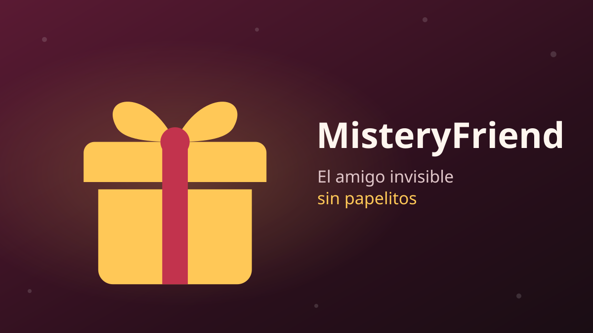

MisteryFriend
ActivoEl amigo invisible sin papelitos: quien organiza enseña un QR, cada uno se apunta con su correo y el sorteo le llega a cada uno en secreto.
Estimación. Están escritos el servidor, la aplicación de Android y la página web, y probados en el ordenador con Google de mentira. Falta ponerlo en marcha con una cuenta de Google de verdad, probar la aplicación en el móvil y publicarla.
- Android
- Java
- Google Apps Script
- JavaScript
- Códigos QR
- PowerShell
«Abrir en VS Code» abre el programa, pregunta en qué carpeta guardarlo y lo trae de GitHub. Si ya lo tienes en ese ordenador, ábrelo desde VS Code y pulsa sincronizar. «Editar en el navegador» lo abre al día, sin instalar nada, pero no puede ejecutarlo.
El código es privado: GitHub pedirá iniciar sesión con una cuenta que tenga permiso.

- Etapa
- Etapa 3: ponerlo en marcha y probarlo de verdad
- Empezó
- 27 de noviembre de 2026
- Último movimiento
- 27 de noviembre de 2026
- Tamaño
- 3.922 líneas en 20 archivos de código
- Cambios guardados en git
- 10
En corto
Organizar un amigo invisible suele acabar con papelitos en un sombrero, alguien a quien le toca su pareja y un grupo de mensajería lleno de pistas. MisteryFriend lo resuelve con el móvil: quien organiza crea la sesión, pone presupuesto, fecha y normas, y le toca un código gracioso, una palabra del diccionario con dos números, como Zascandil27, que también va dentro de un código QR.
Cada participante se apunta con su nombre y su correo, y deja una idea de lo que le gustaría y un comentario para quien le regale. Para comprobar que el correo es suyo, le llega un código de 4 números que tiene que escribir.
Quien organiza decide a quién no le puede tocar cada uno (parejas, hermanos) y lanza el sorteo. A cada uno le llega un correo con su amigo invisible y su idea de regalo. Nadie más lo sabe, tampoco quien organiza, que además puede participar como uno más.
La privacidad manda: quien organiza ve los nombres pero nunca los correos, nadie puede averiguar si una dirección está apuntada y todo se borra solo a los 90 días. Quien no tiene Android se apunta desde la página web que abre el QR.
Cómo está hecho
La aplicación y la página no deciden nada: piden al servidor, que guarda las sesiones, hace el sorteo y manda los correos.
Leer el esquema como texto
Elementos
- Quien organiza. Aplicación Android: Panel, QR y sorteo.
- Participantes. Código QR: Abre la app o la web; Página web: Apuntarse sin la app.
- Servidor de Google. Apps Script: Reglas y sorteo; Google Drive: Una sesión por archivo.
- Buzones. Correo de cada uno: Código y resultado.
Conexiones
- Aplicación Android → Código QR: enseña
- Código QR → Página web: abre
- Aplicación Android ↔ Apps Script
- Página web ↔ Apps Script
- Apps Script ↔ Google Drive: guarda
- Apps Script → Correo de cada uno: manda
Una muestra de ejecución
Salida real de las pruebas del servidor, ejecutadas en el ordenador el 27 de noviembre de 2026 con los servicios de Google imitados (ningún correo salió de verdad). Recortada.
Apuntarse y confirmar el correo
- Orden
pruebas\servidor.ps1
- Prueba
BIEN crea la sesión con una palabra graciosa de código (Galimatías04) y llave de organizar
- Prueba
BIEN apuntarse manda un correo con el código
- Prueba
BIEN el código del correo son 4 números (6563)
- Prueba
BIEN rechaza un código equivocado y cuenta los intentos
- Prueba
BIEN acepta el código aunque lleve espacios
- Prueba
BIEN guarda la sugerencia de regalo y el comentario
Privacidad
- Prueba
BIEN apuntar un correo ya apuntado responde igual que uno nuevo (no se puede averiguar quién está)
- Prueba
BIEN pero no ve ningún correo entero (a•••@c•••.es)
- Prueba
BIEN ni las sugerencias, ni los códigos, ni las contraseñas
El sorteo
- Prueba
BIEN una exclusión queda en los dos sentidos (pareja)
- Prueba
BIEN nadie se regala a sí mismo ni a un excluido
- Prueba
BIEN sin regalos cruzados, como se pidió
- Prueba
BIEN quien organiza no puede ver quién le toca a quién
- Prueba
BIEN resuelve un reparto difícil de 40 personas (20 parejas y uno casi aislado)
- Por dentro
a A le toca b, c, d: 998, 990, 1012 veces de 3000
- Prueba
Todo bien.
Siguiente paso
Poner en marcha el servidor con una cuenta de Google, fabricar la aplicación con su dirección y probar un amigo invisible de verdad con tres o cuatro personas.
Etapas
- HechaEtapa 1: el servidor
Un guion de Google Apps Script, gratis y sin máquina propia: guarda cada sesión en Google Drive, hace el sorteo y manda los correos. Probado en el ordenador con 45 comprobaciones, con Google de mentira.
- HechaEtapa 2: la aplicación y la página web
Aplicación de Android con el mismo estilo que ChitON y LlaverOFF, con su propio generador de QR, y página web para apuntarse sin la aplicación. La página está recorrida en el ordenador; la aplicación compila, pero no se ha abierto en un móvil.
- En cursoEtapa 3: ponerlo en marcha y probarlo de verdad
Publicar el servidor en una cuenta de Google, subir la página y probar en el móvil un sorteo con personas y correos reales.
- PendienteEtapa 4: publicar en Google Play
Preparados el paquete firmado, el icono, el gráfico, la ficha en español e inglés, la política de privacidad y las respuestas de los formularios, con la declaración de los datos que recoge. Faltan las capturas y la parte de la cuenta.
Qué hay hecho
- Servidor en Google Apps Script: crear, apuntarse, confirmar el correo, cambiar la idea de regalo, borrarse, y para quien organiza el panel, las exclusiones, el sorteo, repetirlo, deshacerlo, reenviar un correo y borrarlo todo.
- Códigos de sesión graciosos: una palabra del diccionario entre 144 (zascandil, cachivache, patidifuso…) con dos números, que se escribe sin mirar mayúsculas, tildes ni eñes. Confirmación del correo con un código de 4 números: cinco intentos por código, cuatro códigos por persona y caducidad a las 48 horas.
- Sorteo que primero prueba al azar puro, para que cada reparto válido salga con la misma probabilidad, y si las exclusiones lo complican, busca con vuelta atrás. Avisa con el nombre de la persona cuando no hay reparto posible.
- Exclusiones en los dos sentidos de un toque (lo normal en parejas y hermanos) y opción de evitar regalos cruzados.
- Privacidad: quien organiza ve los correos tapados, nadie ve el reparto, apuntar un correo ya apuntado responde igual que uno nuevo, de las llaves solo se guarda su huella y todo se borra a los 90 días sin cambios.
- Quien cambia de móvil vuelve a entrar con su correo y otro código; la llave del móvil viejo deja de valer.
- Aplicación de Android sin bibliotecas y con un solo permiso, Internet: inicio con mis amigos invisibles, crear, panel con QR a pantalla completa y brillo al máximo, apuntarse, y ver a quién le regalas destapando un regalo.
- Generador de códigos QR propio, comparado módulo a módulo con la biblioteca qrcode de Python en 56 casos: todos iguales.
- Página web para apuntarse desde el QR sin la aplicación, también en iPhone, con botón para abrir la aplicación si está instalada.
- El QR abre la aplicación si está instalada (enlaces de Android verificados con assetlinks.json) y si no, la página.
- Correos con diseño propio: el del código y el del resultado, con la idea de regalo, el presupuesto, la fecha y las normas.
- Pruebas en el ordenador: el servidor se ejecuta en Edge con Google de mentira (45 comprobaciones) y la página se recorre sola como lo haría un participante, con capturas.
- Preparado para Google Play: paquete firmado, icono, gráfico, ficha en dos idiomas, política de privacidad y declaración de datos.
Qué falta
- Publicar el servidor con una cuenta de Google y subir la página web.
- Abrir la aplicación en un móvil por primera vez y probar un sorteo con correos reales.
- Capturas para la tienda.
- Comprobar el nombre en Google Play y en registros de marcas.
- Prueba cerrada de 12 personas durante 14 días y revisión de Google.
- Ideas para después: aviso cuando alguien se apunta, recordatorio antes de la fecha, repetir el del año pasado sin que toquen las mismas parejas, y preguntas anónimas al amigo invisible.
Lecciones aprendidas
- Un servidor no tiene por qué ser una máquina: un guion de Google Apps Script guarda datos, manda correos y contesta a la aplicación, gratis.
- Para probar un servidor de Google sin Google basta con imitar los cuatro servicios que usa y ejecutarlo en el navegador.
- Comparar con otra biblioteca no siempre sirve de juez: una de las dos usadas para el QR rellenaba distinto al final, de forma válida, y daba diferencias que no eran fallos. Hizo falta una segunda referencia.
- La privacidad también está en los mensajes de error: decir «ese correo ya está apuntado» ya desvela algo. La respuesta tiene que ser igual en los dos casos.
- Si el nombre de una aplicación puede cambiar, mejor que no vaya en el paquete ni en la dirección web.
Diario
Nace con una idea clara del dueño: un administrador que crea la sesión y la comparte con un QR, participantes que confirman su correo con un código, exclusiones para parejas y hermanos, y el resultado por correo. Por el camino pide que cada uno, también quien organiza si participa, pueda dejar una idea de regalo y un comentario, y que se cuide la privacidad: quien organiza no debe poder ver los correos. Se elige un servidor gratuito en Google Apps Script, que guarda en Drive y manda con Gmail, y se escribe con sus pruebas en el navegador. Después, la página web para quien no tiene la aplicación y la aplicación de Android, con su propio generador de QR. Primero el código del correo era el nombre de un Pokémon de la primera generación; el dueño lo cambia: las palabras graciosas del diccionario pasan a ser el código de cada sesión (Zascandil27) y el correo se confirma con 4 números, lo que además quita el riesgo de marca. El nombre provisional era RegalON; el dueño lo cambia a MisteryFriend, y la carpeta, el paquete y la dirección web se quedan con un nombre neutro para poder cambiarlo sin romper nada. Al acabar el día todo está probado en el ordenador, pero falta ponerlo en marcha con una cuenta de Google y abrirlo en un móvil.
Memoria para retomar
El cuaderno técnico del proyecto: lo necesario para ponerse al día y seguir.
Abrir la memoria para retomar
Qué es y qué se busca
La aplicación se llama MisteryFriend (así lo escribió el dueño; en inglés correcto sería «Mystery»). La carpeta, el repositorio (em3ge/amigo-invisible, privado), el paquete (io.github.em3ge.amigoinvisible) y la dirección web (/amigo-invisible/) llevan un nombre neutro para poder cambiar el nombre sin romper nada. Antes se llamó RegalON durante unas horas.
Es un amigo invisible: quien organiza crea la sesión en la aplicación; su código es una palabra graciosa del diccionario con dos números (Zascandil27) y va en un QR; cada participante se apunta con nombre, correo, idea de regalo y comentario, y confirma el correo con un código de 4 números (al principio iba a ser un Pokémon; el dueño lo cambió); quien organiza pone exclusiones y sortea; a cada uno le llega su resultado por correo.
Normas del proyecto
- Privacidad (la pidió el dueño): quien organiza no ve correos (tapados), nadie ve el reparto, nadie puede averiguar si un correo está apuntado, borrado a los 90 días.
- Un solo permiso (Internet) y ninguna biblioteca.
- Las reglas viven en el servidor, con su prueba en
pruebas/servidor.html. - No dar por bueno lo que no se ha probado en el móvil y contra el servidor de verdad.
Cómo ponerlo en marcha
- Servidor:
servidor\PUBLICAR.md(lo hace el dueño con su cuenta de Google; se le recomendó una cuenta aparte, por ejemplo la de Jarvis). .\construir.ps1(necesitaservidor\direccion.txtcon la dirección /exec)..\publicar_web.ps1sube la página, la política, la aplicación y.well-known\assetlinks.jsona esta web.- Pruebas:
pruebas\servidor.ps1,pruebas\web.ps1,pruebas\qr.ps1.
Estado al acabar el 27 de noviembre de 2026
Versión 1.0 (código 1). Probado en el ordenador: el servidor con Google imitado (45 de 45), la página web recorrida como participante (10 de 10) y el QR contra la biblioteca qrcode (56 de 56). La aplicación compila y se firma, pero no se ha abierto en ningún móvil (no estaba enchufado) y el servidor no está publicado: nada se ha probado contra Google de verdad ni se ha mandado un correo real.
Preparado para Google Play en la carpeta play (empezar por play\pasos.md); faltan las capturas y la parte de la cuenta.
Proyectos relacionados
- ChitON. Misma forma de fabricar la aplicación, sin Gradle, y mismo estilo de pantalla.
- LlaverOFF. Guarda las llaves con las que se firma MisteryFriend.
Texto para retomarlo con Claude
Pega este texto al empezar una sesión y Claude se pone al día.
Vamos a retomar el proyecto amigo-invisible (la aplicación se llama MisteryFriend): un amigo invisible con servidor en Google Apps Script, aplicación de Android y página web. Antes de tocar nada, lee LEEME.md del proyecto y la memoria para retomar de su ficha en la web de proyectos. El servidor está en servidor/Codigo.gs (se prueba con pruebas/servidor.ps1), la pantalla en MainActivity.java y la página en web/index.html (pruebas/web.ps1). Dime en pocas líneas en qué punto estamos y cuál es el siguiente paso, y espera mi visto bueno. Normas: quien organiza nunca ve correos ni el reparto; un solo permiso, Internet, y ninguna biblioteca; las reglas nuevas van en el servidor con su prueba; no dar por bueno lo que no se haya probado en el móvil y contra el servidor de verdad.